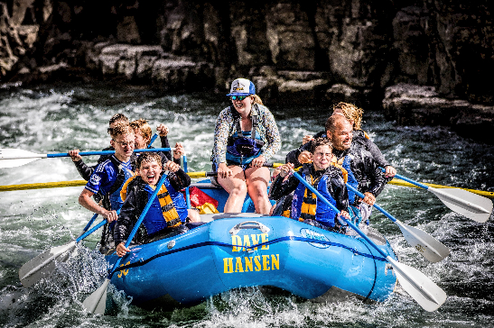

Company Purpose: "At RAPIDS, our overarching purpose is to curate and deliver unparalleled white water rafting experiences that go beyond the ordinary, transcending the boundaries of adventure and nature immersion. Rooted in a profound belief in the transformative power of outdoor exploration, we strive to create moments that not only captivate thrill-seekers but also foster a deep and lasting connection between individuals and the untamed beauty of the natural world. Our commitment to excellence begins with safety as our top priority. We recognize the inherent risks associated with white water rafting and, therefore, implement rigorous safety standards, cutting-edge equipment, and highly trained guides to ensure the well-being of our participants. Safety is not just a policy for us; it's an integral part of our culture, embedded in every aspect of our operations. Environmental stewardship is another cornerstone of our purpose. We understand the importance of preserving the pristine environments where we operate. Through responsible practices, conservation efforts, and community engagement, we strive to minimize our ecological footprint and contribute to the sustainability of the ecosystems that grace our adventure landscapes. At the heart of our purpose is the desire to create indelible memories. We believe that true adventure extends beyond the rush of the rapids; it encompasses the camaraderie forged on the riverbanks, the shared laughter around the campfire, and the sense of accomplishment felt after conquering nature's challenges. Our mission is to craft experiences that not only thrill but also inspire a lifelong passion for the outdoors.

RAPIDS

History
Established in 2020 by avid adventurer Ayang Jerti, Rapids Pioneers began with a dream to share the thrill of white water rafting with the world. From humble beginnings in a garage, the company swiftly gained acclaim for its unwavering commitment to safety, customer satisfaction, and environmental stewardship. Rapids Pioneers expanded operations to diverse rivers, each offering a unique adventure. The company became synonymous with unforgettable outdoor escapades. Today, Rapids Pioneers stands as a testament to the power of dreams. With a dedicated team and state-of-the-art rafts, they continue to create lasting memories for those who dare to ride the rapids.